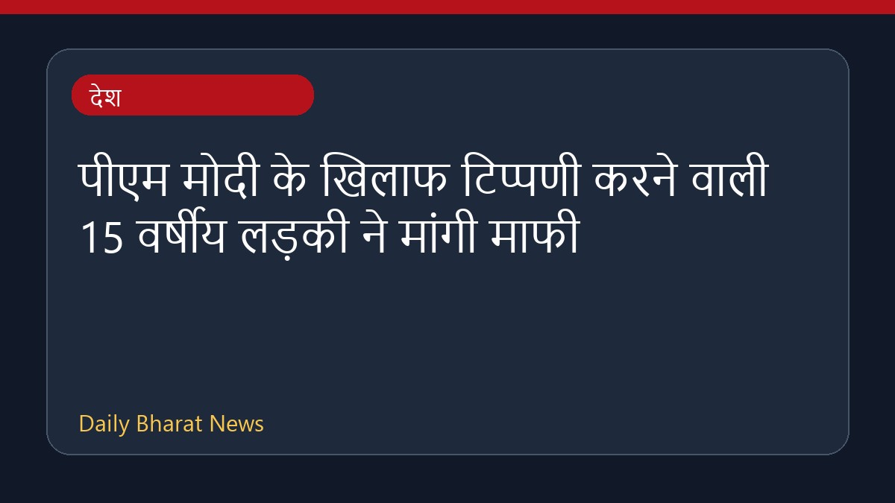

पीएम मोदी के खिलाफ टिप्पणी करने वाली 15 वर्षीय लड़की ने मांगी माफी

हाल ही में एक विरोध प्रदर्शन के दौरान प्रधानमंत्री नरेंद्र मोदी के खिलाफ कथित तौर पर आपत्तिजनक टिप्पणी करने वाली 15 वर्षीय लड़की ने एक वीडियो जारी कर माफी मांगी है। नोएडा की रहने वाली इस किशोरी ने देशवासियों से क्षमा मांगते हुए इसे अपनी पहली और आखिरी गलती बताया है। इस मामले में पुलिस ने कानूनी कार्रवाई करते हुए मामला दर्ज किया था, जिसे बाद में दिल्ली स्थानांतरित कर दिया गया। एक सैलून संचालक ने यह भी दावा किया कि उसने अपनी पहचान छिपाई थी और आधार कार्ड देने से मना किया था।
मूल स्रोत: India News Sources
"I Am Just 15, Forgive Me": Girl Booked For Abusing PM Modi At Protest Apologises - NDTV ↗
"I Am Just 15, Forgive Me": Girl Booked For Abusing PM Modi At Protest Apologises - NDTV ↗